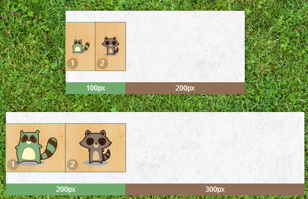
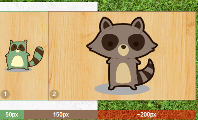

FLexbox
Флексбокс — это CSS-механизм, который позволяет контролировать размер, порядок и выравнивание элементов по нескольким осям, распределение свободного места между элементами и многое другое.
Чтобы включить флексбокс, нужно задать элементу свойство display: flex;. После этого:
- Элемент с
display: flex;превращается во «флекс-контейнер». - Непосредственные потомки этого элемента превращаются во «флекс-элементы» и начинают распределяться по новым правилам.
Главная и поперечная оси
Оси — одно из основных понятий во флексбоксах.
В обычном потоке документа блоки и текст располагаются слева направо и сверху вниз.
В привычной блочной модели направления «лево», «право», «верх» и «низ» неизменны. Но внутри флекс-контейнера эти понятия могут изменяться, потому что там можно изменять обычное направление потока.
- Главной осью flex-контейнера является направление, в соответствии с которым располагаются все его дочерние элементы. Поток флекс-элементов «течёт» вдоль главной оси от её начала к её концу.
- Поперечной осью называется направление, перпендикулярное главной оси. Вдоль этой оси работает «вертикальные» выравнивания.

По умолчанию главная ось направлена слева направо, но её можно разворачивать во всех направлениях с помощью
свойства flex-direction, которое задаётся для флекс-контейнера. Значения свойства:
- Значение по умолчанию
row— главная ось направлена слева направо. column— главная ось направлена сверху вниз.row-reverse— главная ось направлена справа налево.column-reverse— главная ось направлена снизу вверх.
Поперечная ось всегда перпендекулярна главной оси и поворачивается вместе с ней:
- Если главная ось направлена горизонтально, то поперечная ось смотрит вниз.
- Если главная ось направлена вертикально, то поперечная ось смотрит направо.
Таким образом, поперечная ось никогда не смотрит вверх или влево, и свойства для поворота поперечной оси нет.
Распределение флекс-элементов
Выравнивание по главной оси
CSS-свойство justify-content определяет то, как будут выровнены элемент вдоль главной оси.
Доступные значения justify-content:
- Значение по умолчанию
flex-start— элементы располагаются у начала главной оси. flex-end— элементы располагаются в конце главной оси.center— элементы располагаются по центру главной оси.space-between— элементы располагаются так, что расстояние между соседними одинаковые, а между элементами и краями флекс-контейнера отступов нет.space-around— элементы располагаются так, что расстояние между соседними одинаковые, а между элементами и краями флекс-контейнера есть отступ, равный половине расстояния между соседними элементами.space-evenly— расстояние между соседними элементами и краями флекс-контейнера одинаковые.
Вырванивание по поперечной оси
CSS-свойство align-items определяет то, как будут выровнены элементы вдоль поперечной оси. Доступные значения align-items:
- Значение по умолчанию
stretch— элементы растягиваются на всю «высоту» флекс-контейнера. flex-start— элементы располагаются у начала поперечной оси.flex-end— элементы располагаются в конце поперечной оси.center— элементы располагаются по центру поперечной оси.baseline— элементы выравниваются по базовой линии текста внутри них.
Распределение элементов по главной оси задаётся для всего флекс-контейнера и на все флекс-элементы действует одинаково, задать какому-то элементу отличное от других распределение по главной оси нельзя.
Поперечное выравнивание можно задать каждому элементу отдельно. Для этого используется свойство align-self, которое задаётся для самих флекс-элементов, а не для флекс-контейнера. У свойства align-self те же самые значения, что и у align-items.
Перенос флекс-элементов
Если флекс-элементов в контейнере станет больше, чем может уместиться в один ряд, то:
- Они будут сжиматься до минимально возможной ширины.
- Даже если им задать ширину, механизм флексбокса может ее уменьшить.
- Если они перестанут помещаться в контейнер и после уменьшения, то выйдут за его пределы, но продолжат распологаться в один ряд.
Чтобы этого не происходило, нужно воспользоваться свойством флекс-контейнера flex-wrap. У него есть два значения:
- Значение по умолчанию
nowrap— перенос флекс-элементов на новую строку запрещен. wrap— разрешает перенос флекс-элементов на новую строку. Ряды элементов располагаются вдоль поперечной оси, первый ряд — в начале поперечной оси, последний — в конце.wrap-reverse— также разрешает перенос флекс-элементов на новую строку. Ряды элементов располагатся в обратном порядке: первый — в конце поперечной оси, последний — в начале.
Выравнивание строк флекс-контейнера
Свойство align-content управляет выравниванием рядов флекс-элементов вдоль поперечной оси. У него и свойства justify-content очень похожие значения:
- Значение по умолчанию
stretch— растягивает ряды флекс-элементов, при этом оставшееся свободное место между ними делится поровну. Отображение строк при этом зависит от значенияalign-items:
- Если у
align-itemsзадано значениеstretch, то элементы в строках растягиваются на всю высоту своей строки. - Если значение отлично от
stretch, то элементы в строках ужимаются под своё содержимое и выравниваются в строках в зависимости от значенияalign-items.
- Если у
-
flex-start— располагает ряды флекс-элементов в начале поперечной оси. flex-end— располагает ряды флекс-элементов в конце поперечной оси.center— располагает ряды флекс-элементов в середине поперечной оси так, что отступов между соседними рядами нет, а расстояние между первым рядом и краем флекс-контейнера равно расстоянию между последним рядом и другим краем.space-between— равномерно распределяет ряды флекс-элементов вдоль поперечной оси, расстояние между соседними рядами одинаковые, отступов у краёв нет.space-around— равномерно распределяет ряды флекс-элементов вдоль поперечной оси, расстояние между соседними рядами одинаковые, отступы у краёв равны половине расстояния между соседними рядами.space-evenly— равномерно распределяет ряды вдоль поперечной оси, расстояние между соседними рядами и у краёв одинаковые.
Свойство align-content «перекрывает» заданное значение align-items, которое управляет выравниванием флекс-элементов вдоль поперечной оси. Это происходит в случае, когда есть только один ряд флекс-элементов, и когда рядов несколько.
Ранее в спецификации было описано другое поведение:
- Если есть только один ряд флекс-элементов, то работает
align-items. - Если есть несколько рядов, то работает
align-content.
В начале 2019 года поведение было актуализировано согласно спецификации во всех современных браузерах, теперь его можно встретить только в старых браузерах.
Порядковый номер флекс-элемента
Порядок следования флекс-элементов в потоке можно изменять с помощью свойства order, порядкового номера флекс-элемента, не меняя при этом HTML-код.
По умолчанию порядковый номер флекс-элементов равен 0, а сортировка элементов производится по возрастанию номера. Порядковый номер задаётся целым числом, положительным или отрицательным.
Применение флексбоксов
Идеальное выравнивание
С помощью флексбокса можно отцентрировать элемент по вертикали и горизонтали так, чтобы центровка сохранялась при изменении размеров элемента или контейнера.
Для этого нужно задать контейнеру раскладку флексбокса, а дочернему флекс-элементу margin: auto. В этом случае флекс-элемент уменьшит свой размер под содержимое и отцентрируется по вертикали и горизонтали.
«Гибкое» меню
Сортировка элементов на CSS
Используя одновременно флексбокс и селектор по выделению чекбокса :ckecked ~, можно с помощью селектора управлять порядком флекс-элементов, изменяя направление главной оси с помощью flex-direction.
Лучше всего эффект работает, когда направление главной оси меняется с «сверху вниз» на «снизу вверх». При этом флекс-контейнер должен находиться в разметке на одном уровне с чекбоксом.
Блоки одинаковой высоты
Особенности свойства margin
- внешние отступы не схлопываются, ни по горизонтали, ни по вертикали;
- внешние отступы не выпадают, ни из флекс контейнера;
- значение
auto— самое влиятельное значение css-свойсто внутри флекс-контейнера. (отменяет свойство align-items, align-self, justify-content)
Базовый размер флекс-элемента, flex-basis
Ширина и высота тоже не умеют реагировать на поворот главной оси. Поэтому ввели понятия главный размер или main size и поперечный размер или cross size.
Если главная ось направлена горизонтально, то главный размер — это ширина, свойство width, а поперечный размер — это высота, свойство height. Если главная ось направлена вертикально, то всё наоборот.
А хотелось бы иметь «умное» свойство для задания размера флекс-элементов, которое знает про главную ось и «поворачивается» вместе с ней.
И такое свойство есть — это flex-basis. Оно задаёт базовый размер флекс-элемента или размер вдоль главной оси.
Если flex-basis не задан или его значение равно auto, то базовый размер берётся из width или height.
Свойство flex-basis «сильнее» свойств width и height, и если у флекс-элемента заданы все три свойства, то flex-basis переопределит либо ширину, либо высоту в зависимости от направления главной оси.
Коэффициент растягивания элементов, flex-grow
Пропорциональное растягивание элементов
Если сразу у нескольких флекс-элементов значение flex-grow больше нуля, то они будут делить свободное место между собой.
Расчёт итогового размера с flex-grow
- Рассчитываем свободное место во флекс-контейнере:
Свободное место = Ширина контейнера - Сумма базовых размеров элементов - Считаем размер минимальной доли свободного места:
Доля свободного места = Свободное место / Сумма flex-grow всех элементов - Базовый размер каждого флекс-элемента увеличиваем на размер минимальной доли свободного места, умноженной на значение
flex-growэтого элемента:
Итоговый размер = Базовый размер + (Доля свободного места * flex-grow)
ПРИМЕР:

Свободное место = 300px - (50px * 2) = 200px
Доля свободного места = 200px / (1 + 3) = 50px
Итоговый размер зелёного енота = 50px + (50px * 1) = 100px
Итоговый размер коричневого енота = 50px + (50px * 3) = 200px
Но если задать флекс-элементам нулевой базовый размер, свободное место будет занимать всю ширину флекс-контейнера, и коэффициенты жадности будут другими.
flex-basis: 0 и flex-grow для точного управления относительными размерами не стоит. Лучше использовать базовый размер в процентах.Тонкость. На размер оставшегося свободного места влияет не только
flex-basis, но и рамки, и отступы. Если flex-basis явно задано нулевое значение, то min-width на размер свободного места влиять не будет, так как ограничения размеров к флекс-элементам применяются уже после перераспределения свободного места.
Коэффициент сжатия элементов, flex-shrink
Если сумма базовых размеров флекс-элементов больше, чем размер флекс-контейнера, то возникает отрицательное пространство.
Механизм перераспределения работает не только для свободного места, но и для отрицательного пространства. Флекс-элементы умеют распределять отрицательное пространство между собой и сжиматься.
Флекс-элементы стараются быть максимально «гибкими» и не выпадать из своего контейнера, поэтому у flex-shrink значение по умолчанию равно 1. Но если задавать нулевые значения для коэффициента сжатия, то выпадения элементов добиться можно.
Свойство flex-shrink очень похоже на свойство flex-grow. Оно задаёт пропорции, в которых флекс-элементы «впитывают» отрицательное пространство.
Чем больше значение коэффициента сжатия у элемента, тем больше отрицательного пространства он «впитает» и тем сильнее сожмётся.
Когда базовые размеры флекс-элементов одинаковы, пропорции сжатия элементов считаются так же, как пропорции увеличения.
Расчёт итогового размера с flex-shrink
- Рассчитываем отрицательное пространство (ОП) во флекс-контейнере:
ОП = Ширина контейнера - Сумма базовых размеров элементов - Находим сумму произведений базовых размеров (СПБР) элементов на их коэффициенты сжатия:
СПБР = (Базовый размер1 * flex-shrink 1) + (Базовый размер2 * flex-shrink2) + … + (Базовый размерn * flex-shrinkn) - Для каждого элемента считаем «нормированный коэффициент сжатия» (НКС), для чего произведение базового размера элемента на его коэффициент сжатия делим на СПБР:
НКС = (Базовый размер * flex-shrink) / СПБР - Базовый размер элемента уменьшаем на часть ОП пропорциональную НКС элемента. ОП для расчёта берём по модулю, то есть отбрасывая минус:
Итоговый размер = Базовый размер - (НКС * ОП)
Получается, что доля отрицательного пространства, которую «впитает» элемент, зависит от двух факторов:
- соотношения коэффициента сжатия элемента с коэффициентами других элементов;
- соотношения базового размера элемента с базовыми размерами других элементов.
flex-shrink и min-width

Отрицательное пространство = 200px - 100px - 300px = -200px
Сумма произведений размеров на коэффициенты = (1 * 100px) + (1 * 300px) = 400px
Нормированный коэффициент 1 элемента = (1 * 100px) / 400px = 0.25
Нормированный коэффициент 2 элемента = (1 * 300px) / 400px = 0.75
Итоговый размер 1 элемента = 100px - (200px * 0.25) = 50px
Итоговый размер 2 элемента = 300px - (200px * 0.75) = 150px
Есть несколько тонкостей, касающихся сжатия флекс-элементов:
- элементы сжимаются в пределах своих базовых размеров, внутренние отступы и рамки не сжимаются;
- «ограничительные» свойства, такие как min-width, применяются к элементам после этапа перераспределения свободного места или отрицательного пространства.
Сокращённое свойство flex
Значения: flex-grow, flex-shrink, flex-basis. Также есть особые значения: inital, auto, none.
flex: initial; -> flex: 0 1 auto;
flex: auto; -> flex: 1 1 auto;
flex: none; -> flex: 0 0 auto;
flex: 1 0; -> flex: 1 0 0%;
flex: 1; -> flex: 1 1 0%;